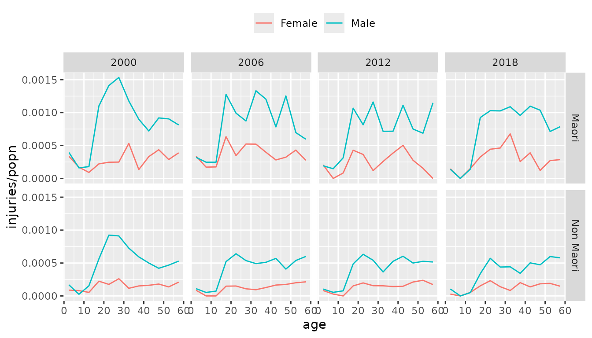
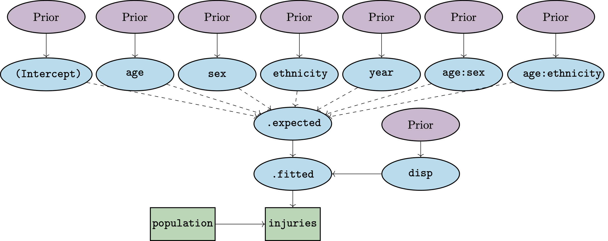
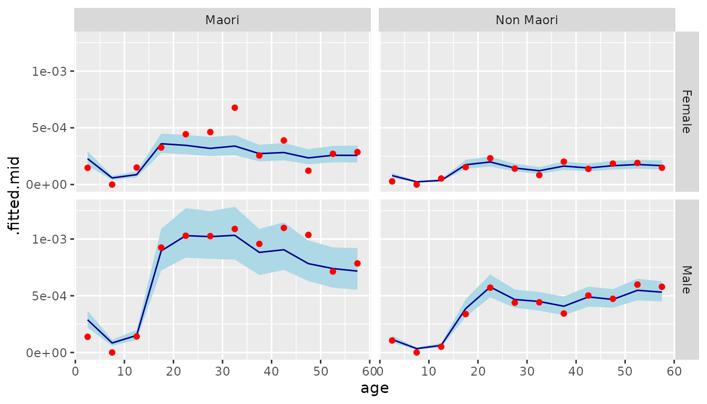
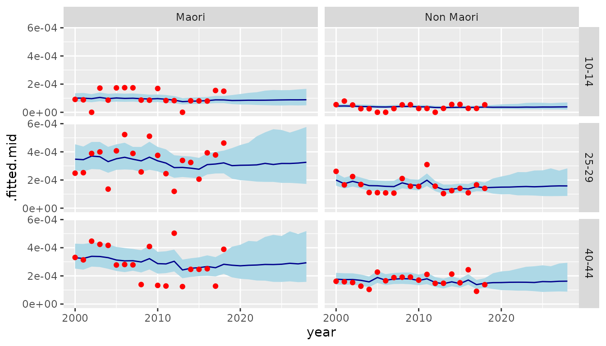
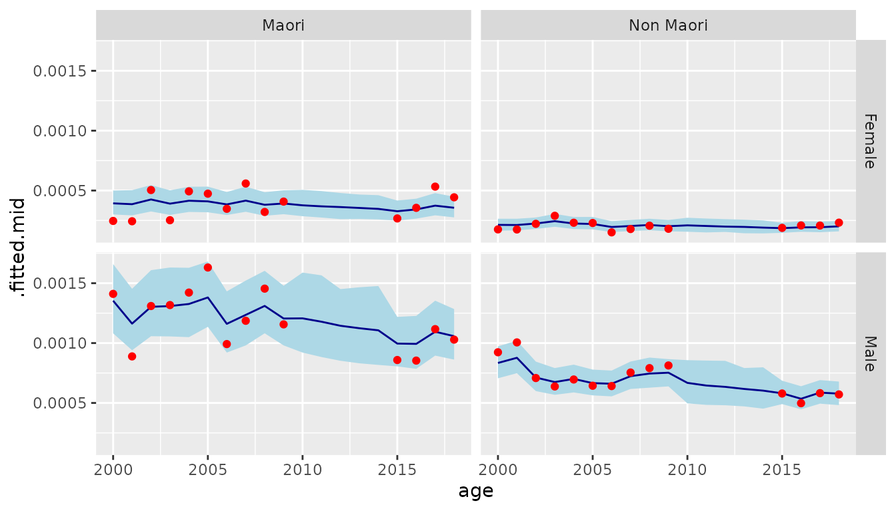
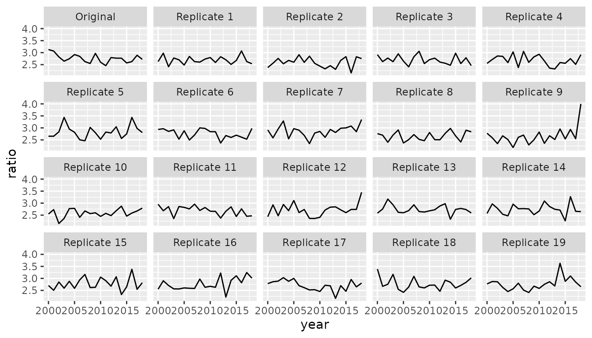

Introduction
bage (= “Bayesian” + “age”) implements Bayesian hierarchical models for rates, probabilities, and means, where the rates, probabilities and means are classified by variables such as age, sex, and region. Models in bage can be used for estimation and for forecasting.
The models in bage are hierarchical in that they are built out of smaller submodels. A model for mortality rates, for instance, might contain submodels describing how rates vary over age, sex, and time.
Internally, bage draws on package TMB to fit the models. TMB is fast and can handle large datasets – characteristics that are inherited by bage.
This vignette introduces the main features of bage, using data on injuries.
Preliminaries
Packages
We begin by loading the packages that we will need for the analysis of the injuries data. Loading bage automatically loads package rvec, which contains functions for working with draws from probability distributions. Package poputils contains functions for working with demographic data. Packages dplyr and tidyr are core tidyverse packages for manipulating data. We use ggplot2 to graph inputs and outputs.
library(bage)
#> Loading required package: rvec
#>
#> Attaching package: 'rvec'
#> The following objects are masked from 'package:stats':
#>
#> sd, var
#> The following object is masked from 'package:base':
#>
#> rank
#> Error in get(paste0(generic, ".", class), envir = get_method_env()) :
#> object 'type_sum.accel' not found
library(poputils)
library(dplyr)
#>
#> Attaching package: 'dplyr'
#> The following objects are masked from 'package:stats':
#>
#> filter, lag
#> The following objects are masked from 'package:base':
#>
#> intersect, setdiff, setequal, union
library(tidyr)
library(ggplot2)Data
We analyse a dataset called nzl_injuries that is
included in the bage package. The dataset contains
counts of fatal injuries and population in New Zealand, classified by
age, sex, ethnicity, and year.
head(nzl_injuries)
#> # A tibble: 6 × 6
#> age sex ethnicity year injuries popn
#> <fct> <chr> <chr> <int> <int> <int>
#> 1 0-4 Female Maori 2000 12 35830
#> 2 5-9 Female Maori 2000 6 35120
#> 3 10-14 Female Maori 2000 3 32830
#> 4 15-19 Female Maori 2000 6 27130
#> 5 20-24 Female Maori 2000 6 24380
#> 6 25-29 Female Maori 2000 6 24160
nzl_injuries |>
filter(year %in% c(2000, 2006, 2012, 2018)) |>
ggplot(aes(x = age_mid(age), y = injuries / popn, color = sex)) +
facet_grid(vars(ethnicity), vars(year)) +
geom_line() +
xlab("age") +
theme(legend.position = "top",
legend.title = element_blank())
Specifying a model
Functions for specifying models
We specify a model in which, within each combination of age, sex,
ethnicity, and year, injuries are treated as a random draw from a
Poisson distribution. The function used to specify a Poisson model is
mod_pois(). Binomial models can be specified with function
mod_binom() and normal models with function
mod_norm().
The first argument to mod_pois() is an R-style formula
identifying the outcome variable and the combinations of predictor
variables to be used in the model.
mod <- mod_pois(injuries ~ age * sex + age * ethnicity + year,
data = nzl_injuries,
exposure = popn)Model structure
The resulting model has the following structure:

Structure of model. Rectangles denote data, ellipses denote unknown quantities that are inferred within the model, solid arrows denote probabilistic relationships, and dashed arrows denote deterministic relationships.
The number of injuries occurring within each combination of age, sex,
ethnicity, and time reflects (i) the population at risk and (ii) an
underlying rate that in bage is referred to as
.fitted. The expected value for .fitted is
obtained by summing up values for the intercept, age effect, sex effect,
and so forth. The actual value of .fitted can diverge from
.expected: the amount of divergence is governed by the
disp (dispersion) parameter.
The model terms are all given “prior distributions”. A prior distribution is a submodel capturing features of the unknown quantity or quantities being estimated. Possible features include the range within which the quantity is likely to fall, or the amount of smoothness expected in series of values. Priors distributions are a distinctive feature of Bayesian methods.
Printing the model object
Printing a model object provides information on its structure:
mod
#> ------ Unfitted Poisson model ------
#>
#> injuries ~ age * sex + age * ethnicity + year
#>
#> exposure = popn
#>
#> term prior along n_par n_par_free
#> (Intercept) NFix() - 1 1
#> age RW() age 12 12
#> sex NFix() - 2 2
#> ethnicity NFix() - 2 2
#> year RW() year 19 19
#> age:sex RW() age 24 24
#> age:ethnicity RW() age 24 24
#>
#> disp: mean = 1
#>
#> n_draw var_time var_age var_sexgender
#> 1000 year age sexThe table in the the middle of the printout above shows the default prior distribution assigned to each term. We return to priors in Section @ref(sec:priors).
The bottom row of the printed object shows various model settings.
n_draw is the number of random draws produced by extractor
functions, which we discuss in Section @ref(sec:outputs).
var_time, var_age, and
var_sexgender are the names of the variables in
nzl_injuries that represent time, age, and sex or gender.
If bage fails to correctly identify these variables,
they can be identified using functions such as
set_var_time().
Fitting a model
fit()
Function mod_pois() specifies a model, but does not
actually estimate any of the unknown quantities in the model. For that,
we need function fit().
mod <- mod |>
fit()Reprinting the model object
The printout for a fitted model differs from that of an unfitted model.
mod
#> ------ Fitted Poisson model ------
#>
#> injuries ~ age * sex + age * ethnicity + year
#>
#> exposure = popn
#>
#> term prior along n_par n_par_free std_dev
#> (Intercept) NFix() - 1 1 -
#> age RW() age 12 12 0.71
#> sex NFix() - 2 2 0.11
#> ethnicity NFix() - 2 2 0.36
#> year RW() year 19 19 0.09
#> age:sex RW() age 24 24 0.43
#> age:ethnicity RW() age 24 24 0.13
#>
#> disp: mean = 1
#>
#> n_draw var_time var_age var_sexgender optimizer
#> 1000 year age sex multi
#>
#> time_total time_optim time_report iter converged message
#> 0.59 0.24 0.22 13 TRUE relative convergence (4)Among other things, a new row appears at the bottom of the printout, providing information about the fitting process. The most important value piece of information is whether the calculations have converged.
Extracting outputs
Extractor functions
Function fit() derives values for the unknown
quantities, but does not return these quantities. For that, we need an
extractor function. The two most important extractor functions in
bage are augment() and
components(). Both of these are generic functions that work
on many sorts of R objects (see here and here).
augment()
augment() returns the original dataset plus some
additional columns of estimated values,
aug <- mod |>
augment()
aug
#> # A tibble: 912 × 9
#> age sex ethnicity year injuries popn .observed
#> <fct> <chr> <chr> <int> <int> <int> <dbl>
#> 1 0-4 Female Maori 2000 12 35830 0.000335
#> 2 5-9 Female Maori 2000 6 35120 0.000171
#> 3 10-14 Female Maori 2000 3 32830 0.0000914
#> 4 15-19 Female Maori 2000 6 27130 0.000221
#> 5 20-24 Female Maori 2000 6 24380 0.000246
#> 6 25-29 Female Maori 2000 6 24160 0.000248
#> 7 30-34 Female Maori 2000 12 22560 0.000532
#> 8 35-39 Female Maori 2000 3 22230 0.000135
#> 9 40-44 Female Maori 2000 6 18130 0.000331
#> 10 45-49 Female Maori 2000 6 13770 0.000436
#> # ℹ 902 more rows
#> # ℹ 2 more variables: .fitted <rdbl<1000>>, .expected <rdbl<1000>>The columns of estimated values are .observed,
.fitted, and .expected.
aug |>
select(.observed, .fitted, .expected)
#> # A tibble: 912 × 3
#> .observed .fitted .expected
#> <dbl> <rdbl<1000>> <rdbl<1000>>
#> 1 0.000335 3e-04 (0.00023, 0.00038) 0.00029 (0.00026, 0.00034)
#> 2 0.000171 7.8e-05 (5.9e-05, 0.00011) 7.5e-05 (6.1e-05, 9e-05)
#> 3 0.0000914 1e-04 (7.5e-05, 0.00013) 1e-04 (8.6e-05, 0.00012)
#> 4 0.000221 0.00041 (0.00032, 0.00053) 0.00045 (4e-04, 0.00051)
#> 5 0.000246 0.00038 (0.00029, 0.00049) 4e-04 (0.00036, 0.00046)
#> 6 0.000248 0.00035 (0.00026, 0.00044) 0.00037 (0.00032, 0.00042)
#> 7 0.000532 0.00038 (0.00029, 0.00048) 0.00036 (0.00032, 0.00042)
#> 8 0.000135 0.00031 (0.00024, 4e-04) 0.00034 (3e-04, 0.00038)
#> 9 0.000331 0.00033 (0.00025, 0.00042) 0.00033 (0.00029, 0.00038)
#> 10 0.000436 0.00031 (0.00024, 0.00041) 3e-04 (0.00026, 0.00035)
#> # ℹ 902 more rowsIn a Poisson model with exposures,
-
.observedis a “direct” estimate of the rate, obtained by dividing the the outcome variable by the population at risk; -
.expectedis a model-based estimate of the rate, based purely on model predictors (eg age, sex, time); and -
.fittedis a model-based estimate of the rate that is a compromise between.observedand.expected.
components()
components() is used to extract values for higher-level
parameters. It returns values for all the parameters.
comp <- mod |>
components()
comp
#> # A tibble: 89 × 4
#> term component level .fitted
#> <chr> <chr> <chr> <rdbl<1000>>
#> 1 (Intercept) effect (Intercept) -1.7 (-3.4, 0.051)
#> 2 age effect 0-4 -1.7 (-3.4, 0.005)
#> 3 age effect 5-9 -3 (-4.6, -1.2)
#> 4 age effect 10-14 -2.5 (-4.2, -0.76)
#> 5 age effect 15-19 -0.87 (-2.6, 0.89)
#> 6 age effect 20-24 -0.77 (-2.5, 1.1)
#> 7 age effect 25-29 -0.9 (-2.6, 1)
#> 8 age effect 30-34 -0.96 (-2.7, 0.95)
#> 9 age effect 35-39 -0.99 (-2.7, 0.92)
#> 10 age effect 40-44 -0.99 (-2.7, 0.93)
#> # ℹ 79 more rowsA little bit of manipulation is required to extract and graph the parameter of interest,
age_effect <- comp |>
filter(term == "age",
component == "effect") |>
select(age = level, .fitted)
age_effect
#> # A tibble: 12 × 2
#> age .fitted
#> <chr> <rdbl<1000>>
#> 1 0-4 -1.7 (-3.4, 0.005)
#> 2 5-9 -3 (-4.6, -1.2)
#> 3 10-14 -2.5 (-4.2, -0.76)
#> 4 15-19 -0.87 (-2.6, 0.89)
#> 5 20-24 -0.77 (-2.5, 1.1)
#> 6 25-29 -0.9 (-2.6, 1)
#> 7 30-34 -0.96 (-2.7, 0.95)
#> 8 35-39 -0.99 (-2.7, 0.92)
#> 9 40-44 -0.99 (-2.7, 0.93)
#> 10 45-49 -1.1 (-2.8, 0.91)
#> 11 50-54 -1 (-2.8, 0.94)
#> 12 55-59 -0.97 (-2.8, 0.95)Posterior samples
The output from a Bayesian model typically consists of draws from the “posterior distribution” for unknown quantities. The posterior distribution is a probability distribution that describes what we know about the unknown quantities in the model after applying our combining model assumptions (including priors) and data.
Rvecs
Draws from probability distributions can be awkward to work with, so
bage uses a special type of vector, called an “rvec”,
implemented by package rvec. An rvec contains multiple
draws, but tries to behave as much as possible like a standard numerical
vector. The printout of .fitted and .expected
in the aug object above shows medians and 95% credible
intervals.
Graphing outputs
The best way to understand output from a fitted model it to graph it.
We first need to prepare data for the graph. We select values for 2018
and use the draws_ci() function from rvec
to create 95% credible intervals.
data_plot <- aug |>
filter(year == 2018) |>
mutate(draws_ci(.fitted))
data_plot |>
select(starts_with(".fitted"))
#> # A tibble: 48 × 4
#> .fitted .fitted.lower .fitted.mid .fitted.upper
#> <rdbl<1000>> <dbl> <dbl> <dbl>
#> 1 0.00023 (0.00017, 0.00029) 0.000167 0.000228 0.000293
#> 2 5.8e-05 (4.1e-05, 7.7e-05) 0.0000410 0.0000580 0.0000769
#> 3 8.7e-05 (6.3e-05, 0.00012) 0.0000633 0.0000873 0.000115
#> 4 0.00036 (0.00028, 0.00045) 0.000278 0.000360 0.000449
#> 5 0.00035 (0.00027, 0.00044) 0.000267 0.000345 0.000438
#> 6 0.00032 (0.00025, 0.00042) 0.000250 0.000318 0.000419
#> 7 0.00034 (0.00026, 0.00044) 0.000259 0.000339 0.000435
#> 8 0.00027 (2e-04, 0.00035) 0.000204 0.000273 0.000351
#> 9 0.00028 (0.00021, 0.00037) 0.000213 0.000282 0.000366
#> 10 0.00023 (0.00018, 0.00031) 0.000179 0.000235 0.000312
#> # ℹ 38 more rowsWe then use ggplot() to visualise the outputs. In the
figure below we use use geom_ribbon() to plot credible
intervals, geom_line() to plot model-based point estimates,
and geom_point() to plot direct estimates.
ggplot(data_plot, aes(x = age_mid(age))) +
facet_grid(vars(sex), vars(ethnicity)) +
geom_ribbon(aes(ymin = .fitted.lower,
ymax = .fitted.upper),
fill = "lightblue") +
geom_line(aes(y = .fitted.mid),
color = "darkblue") +
geom_point(aes(y = .observed),
color = "red") +
xlab("age")
Priors
Priors in Bayesian models
In a Bayesian model, every unknown quantity needs a prior distribution. When the data provides lots of information on the value of an unknown quantity, the particular choice of prior distribution for that quantity does not normally have much effect on the ultimate estimates for the quantity. But when the data provides only limited information, different priors can lead to very different estimates. The choice of prior is particularly important when forecasting, since the data provides provides only indirect information about events in the future.
Current priors in bage
help(priors) produces a list of the priors that have
been implemented so far in bage.
Examples of priors are:
-
NFix(). Each element of the term being modeled is drawn from a normal distribution with mean0, and standard deviationsd. By default,sdis 1. -
N(). LikeNFix(), butsdis estimated from the data. -
RW(). The elements of the term being modeled follow a random walk. This is appropriate for terms involving time and age, where neighboring elements are strongly correlated. -
AR1(). First-order autoregressive process. Suitable for time series that revert to a mean value.
Defaults
bage uses the following rules to assign default priors to a model term:
- if the term has less than 3 elements, use
NFix(); - otherwise, if the term involves time, use
RW(), with time as the `along’ dimension; - otherwise, if the term involves age, use
RW(), with age as the `along’ dimension; - otherwise, use
N().
Priors can be over-ridden using set_prior():
Replacing a prior deletes any existing estimates and returns a model to an ‘unfitted’ state.
is_fitted(mod)
#> [1] FALSESo we re-fit the model.
mod <- mod |>
fit()SVD-based priors
bage implements a special type of prior based on
applying a singular value decomposition (SVD) to data from international
databases. These SVD-based priors represent the age-sex patterns in
demographic processes such as fertility, mortality, and labor force
participation in a parsimonious way. The model below, for instance, uses
SVD-based priors for age effects and age-time interactions in a model of
regional fertility rates in Korea. Note that the number of free
parameters (denoted n_par_free) for age and
age:time in the printout below is much less than the total
number of parameters (denoted n_par) for age
and age:time.
mod_births <- mod_pois(births ~ age * region + age * time,
data = kor_births,
exposure = popn) |>
set_prior(age ~ SVD(HFD)) |>
set_prior(age:time ~ SVD_RW(HFD)) |>
fit()
mod_births
#> ------ Fitted Poisson model ------
#>
#> births ~ age * region + age * time
#>
#> exposure = popn
#>
#> term prior along n_par n_par_free std_dev
#> (Intercept) NFix() - 1 1 -
#> age SVD(HFD) - 9 3 1.66
#> region N() - 16 16 0.03
#> time RW() time 13 13 0.46
#> age:region RW() age 144 144 0.57
#> age:time SVD_RW(HFD) time 117 39 1.89
#>
#> disp: mean = 1
#>
#> n_draw var_time var_age optimizer
#> 1000 time age multi
#>
#> time_total time_optim time_report iter converged message
#> 1.55 0.82 0.57 18 TRUE relative convergence (4)Forecasting
Forecasts can be constructed by calling function
forecast() on a model object. When output is
"augment" (the default), forecast() produces
values like those produced by augment().
aug_forecast <- mod |>
forecast(labels = 2019:2028)
names(aug_forecast)
#> [1] "age" "sex" "ethnicity" "year" "injuries" "popn"
#> [7] ".observed" ".fitted" ".expected"When output is "components",
forecast() produces values like those produced by
components().
comp_forecast <- mod |>
forecast(labels = 2019:2028,
output = "components")
comp_forecast
#> # A tibble: 10 × 4
#> term component level .fitted
#> <chr> <chr> <chr> <rdbl<1000>>
#> 1 year effect 2019 -0.089 (-0.38, 0.17)
#> 2 year effect 2020 -0.088 (-0.44, 0.24)
#> 3 year effect 2021 -0.081 (-0.45, 0.31)
#> 4 year effect 2022 -0.068 (-0.51, 0.33)
#> 5 year effect 2023 -0.063 (-0.53, 0.38)
#> 6 year effect 2024 -0.062 (-0.55, 0.41)
#> 7 year effect 2025 -0.056 (-0.56, 0.44)
#> 8 year effect 2026 -0.043 (-0.56, 0.44)
#> 9 year effect 2027 -0.032 (-0.6, 0.46)
#> 10 year effect 2028 -0.022 (-0.56, 0.45)When include_estimates is TRUE, the return
value includes historical estimates. This is useful for plotting.
data_forecast <- mod |>
fit() |>
forecast(labels = 2019:2028,
include_estimates = TRUE) |>
filter(sex == "Female",
age %in% c("10-14", "25-29", "40-44")) |>
mutate(draws_ci(.fitted))
ggplot(data_forecast, aes(x = year)) +
facet_grid(vars(age), vars(ethnicity)) +
geom_ribbon(aes(ymin = .fitted.lower,
ymax = .fitted.upper),
fill = "lightblue") +
geom_line(aes(y = .fitted.mid),
color = "darkblue") +
geom_point(aes(y = .observed),
color = "red")
#> Warning: Removed 60 rows containing missing values or values outside the scale range
#> (`geom_point()`).
Imputation
bage automatically accommodates missing values in
the outcome variables. We illustrate with a version of the injuries
dataset where values for 2010–2014 are set to NA.
years_mis <- 2010:2014
injuries_mis <- nzl_injuries |>
mutate(injuries = if_else(year %in% years_mis, NA, injuries))We fit our exactly the same model that we use for the complete dataset.
mod_mis <- mod_pois(injuries ~ age * sex + age * ethnicity + year,
data = injuries_mis,
exposure = popn) |>
fit()bage creates a new variable, called
.injuries containing imputed values for the missing
outcomes.
mod_mis |>
augment() |>
filter(year %in% years_mis)
#> # A tibble: 240 × 10
#> age sex ethnicity year injuries .injuries popn .observed
#> <fct> <chr> <chr> <int> <int> <rdbl<1000>> <int> <dbl>
#> 1 0-4 Female Maori 2010 NA 11 (5, 20) 43440 NA
#> 2 5-9 Female Maori 2010 NA 3 (0, 7) 36340 NA
#> 3 10-14 Female Maori 2010 NA 3 (0, 8) 35520 NA
#> 4 15-19 Female Maori 2010 NA 14 (7, 23) 34960 NA
#> 5 20-24 Female Maori 2010 NA 12 (5, 19) 31060 NA
#> 6 25-29 Female Maori 2010 NA 8 (3, 15) 24000 NA
#> 7 30-34 Female Maori 2010 NA 8 (3, 14) 23180 NA
#> 8 35-39 Female Maori 2010 NA 7 (2, 13) 24260 NA
#> 9 40-44 Female Maori 2010 NA 7 (2, 13) 22660 NA
#> 10 45-49 Female Maori 2010 NA 6 (2, 12) 21730 NA
#> # ℹ 230 more rows
#> # ℹ 2 more variables: .fitted <rdbl<1000>>, .expected <rdbl<1000>>Rates estimates in years where the outcome is missing have wider credible intervals than rates estimates in years where the outcome is observed.
data_plot_mis <- mod_mis |>
augment() |>
filter(age == "20-24") |>
mutate(draws_ci(.fitted))
ggplot(data_plot_mis, aes(x = year)) +
facet_grid(vars(sex), vars(ethnicity)) +
geom_ribbon(aes(ymin = .fitted.lower,
ymax = .fitted.upper),
fill = "lightblue") +
geom_line(aes(y = .fitted.mid),
color = "darkblue") +
geom_point(aes(y = .observed),
color = "red") +
xlab("age")
#> Warning: Removed 20 rows containing missing values or values outside the scale range
#> (`geom_point()`).
Data models
So far we have ignored the possibility that the input data for our
models might be subject to measurement errors. However,
injuries variable in the nzl_injuries dataset
is subject to a special sort of error: Statistics New Zealand has
randomly-rounded the values to base 3 to protect confidentiality.
To deal with measurement error, we add a ‘data model’ to our model.
mod <- mod |>
set_datamod_outcome_rr3() |>
fit()The results from calling augment() now include a
variable called .injuries with estimated values for the
true, unrounded injury counts.
mod |>
augment()
#> # A tibble: 912 × 10
#> age sex ethnicity year injuries .injuries popn .observed
#> <fct> <chr> <chr> <int> <int> <rdbl<1000>> <int> <dbl>
#> 1 0-4 Female Maori 2000 12 12 (10, 14) 35830 0.000335
#> 2 5-9 Female Maori 2000 6 5 (4, 8) 35120 0.000171
#> 3 10-14 Female Maori 2000 3 3 (1, 5) 32830 0.0000914
#> 4 15-19 Female Maori 2000 6 7 (5, 8) 27130 0.000221
#> 5 20-24 Female Maori 2000 6 6 (4, 8) 24380 0.000246
#> 6 25-29 Female Maori 2000 6 6 (4, 8) 24160 0.000248
#> 7 30-34 Female Maori 2000 12 11 (10, 14) 22560 0.000532
#> 8 35-39 Female Maori 2000 3 4 (2, 5) 22230 0.000135
#> 9 40-44 Female Maori 2000 6 6 (4, 8) 18130 0.000331
#> 10 45-49 Female Maori 2000 6 6 (4, 8) 13770 0.000436
#> # ℹ 902 more rows
#> # ℹ 2 more variables: .fitted <rdbl<1000>>, .expected <rdbl<1000>>Model checking
Replicate data
A standard Bayesian approach to checking a model is to use the model
to generate simulate data and see if the simulated data looks like the
actual data. Function replicate_data() creates multiple
sets of simulated data.
rep_data <- mod |>
replicate_data()
rep_data
#> # A tibble: 18,240 × 7
#> .replicate age sex ethnicity year injuries popn
#> <fct> <fct> <chr> <chr> <int> <dbl> <int>
#> 1 Original 0-4 Female Maori 2000 12 35830
#> 2 Original 5-9 Female Maori 2000 6 35120
#> 3 Original 10-14 Female Maori 2000 3 32830
#> 4 Original 15-19 Female Maori 2000 6 27130
#> 5 Original 20-24 Female Maori 2000 6 24380
#> 6 Original 25-29 Female Maori 2000 6 24160
#> 7 Original 30-34 Female Maori 2000 12 22560
#> 8 Original 35-39 Female Maori 2000 3 22230
#> 9 Original 40-44 Female Maori 2000 6 18130
#> 10 Original 45-49 Female Maori 2000 6 13770
#> # ℹ 18,230 more rowsComparing full datasets is difficult, so the usual strategy is to calculate summary measures that capture some important feature of the data, and compare those instead. Here we see if the model is properly capturing male-female differences in injury rates.
sex_ratio <- rep_data |>
count(.replicate, year, sex, wt = injuries) |>
pivot_wider(names_from = sex, values_from = n) |>
mutate(ratio = Male / Female)
sex_ratio
#> # A tibble: 380 × 5
#> .replicate year Female Male ratio
#> <fct> <int> <dbl> <dbl> <dbl>
#> 1 Original 2000 279 873 3.13
#> 2 Original 2001 276 846 3.07
#> 3 Original 2002 303 855 2.82
#> 4 Original 2003 330 873 2.65
#> 5 Original 2004 306 840 2.75
#> 6 Original 2005 300 876 2.92
#> 7 Original 2006 291 828 2.85
#> 8 Original 2007 321 843 2.63
#> 9 Original 2008 339 864 2.55
#> 10 Original 2009 303 900 2.97
#> # ℹ 370 more rowsWe graph the results and see if the original data looks like it was drawn from the same underlying distribution as the simulated data.
ggplot(sex_ratio, aes(x = year, y = ratio)) +
facet_wrap(vars(.replicate)) +
geom_line()
Simulation studies
A simulation study, where we create the data ourselves, and hence
know what the underlying true values are, can be a useful way of
assessing model performance. In the example below, we use function
report_sim() to perform a simple simulation study where the
true population is generated using a first-order random walk, but the
estimation model assumes that the population is generated using a
second-order random walk.
set.seed(0)
## Create simulated data
fake_data <- data.frame(year = 2001:2010,
population = NA)
## Define the true data-generating model
mod_rw <- mod_pois(population ~ year,
data = fake_data,
exposure = 1) |>
set_prior(`(Intercept)` ~ NFix(sd = 0.1)) |>
set_prior(year ~ RW(s = 0.1, sd = 0.1))
## Define the estimation model
mod_rw2 <- mod_pois(population ~ year,
data = fake_data,
exposure = 1) |>
set_prior(year ~ RW2())
## Run the simulation
report_sim(mod_est = mod_rw2, mod_sim = mod_rw)
#> $components
#> # A tibble: 3 × 7
#> term component .error .cover_50 .cover_95 .length_50 .length_95
#> <chr> <chr> <dbl> <dbl> <dbl> <dbl> <dbl>
#> 1 (Intercept) effect -0.0311 0.95 1 1.13 3.34
#> 2 year effect -0.225 0.779 1 1.51 4.50
#> 3 disp disp -0.0280 0.48 0.87 1.17 4.92
#>
#> $augment
#> # A tibble: 2 × 7
#> .var .observed .error .cover_50 .cover_95 .length_50 .length_95
#> <chr> <dbl> <dbl> <dbl> <dbl> <dbl> <dbl>
#> 1 .fitted 1.08 -0.209 0.522 0.965 0.885 2.97
#> 2 .expected 1.08 0.000438 0.59 0.993 1.06 9.90Prior predictive checks
Another way of gaining insights about a model is to look at estimates
based purely on the priors, without using data on the outcome variable.
In bage, this can be done by calling
augment(), components() or
forecast() on an unfitted version of the model.
mod |>
unfit() |>
components()
#> ℹ Model not fitted, so values drawn straight from prior distribution.
#> # A tibble: 90 × 4
#> term component level .fitted
#> <chr> <chr> <chr> <rdbl<1000>>
#> 1 (Intercept) effect (Intercept) 0.061 (-2.1, 1.9)
#> 2 age effect 0-4 -0.0028 (-1.9, 1.9)
#> 3 age effect 5-9 0.036 (-2.6, 2.6)
#> 4 age effect 10-14 -0.046 (-3.4, 3.5)
#> 5 age effect 15-19 -0.039 (-4.4, 3.9)
#> 6 age effect 20-24 -0.1 (-5.3, 4.8)
#> 7 age effect 25-29 -0.057 (-5.5, 5.3)
#> 8 age effect 30-34 -0.016 (-5.7, 5.8)
#> 9 age effect 35-39 -0.058 (-6.2, 6.8)
#> 10 age effect 40-44 -0.11 (-6.5, 7.2)
#> # ℹ 80 more rowsFuture development of bage
Future features
bage is a new package, and still under very active development. Some features that we intend to add are:
- Covariates The ability to add covariates as predictors in a model, eg data on regional incomes in a model of regional mortality.
- Data models Additional data models, eg models that allow for under-reporting of events, or errors in the exposure variable.
- Priors More options for priors, eg a damped linear trend.
- Sets of priors Pre-specified collections of priors for specific purposes such as modelling fertility rates
- Documentation More vignettes and examples.
- Model choice Tools for model comparison and model choice
Experimental status
bage currently has an  life cycle badge, to warn users
that some features of the bage interface, such as
function arguments, are still evolving. From version 0.9.0 onwards,
however, we will use a formal deprecation process to manage any changes
to existing function arguments or defaults.
life cycle badge, to warn users
that some features of the bage interface, such as
function arguments, are still evolving. From version 0.9.0 onwards,
however, we will use a formal deprecation process to manage any changes
to existing function arguments or defaults.
Bug reports and feature requests
We would be grateful for bug reports or suggestions for features. The best way to do so is to raise an issue on the bage GitHub repository.